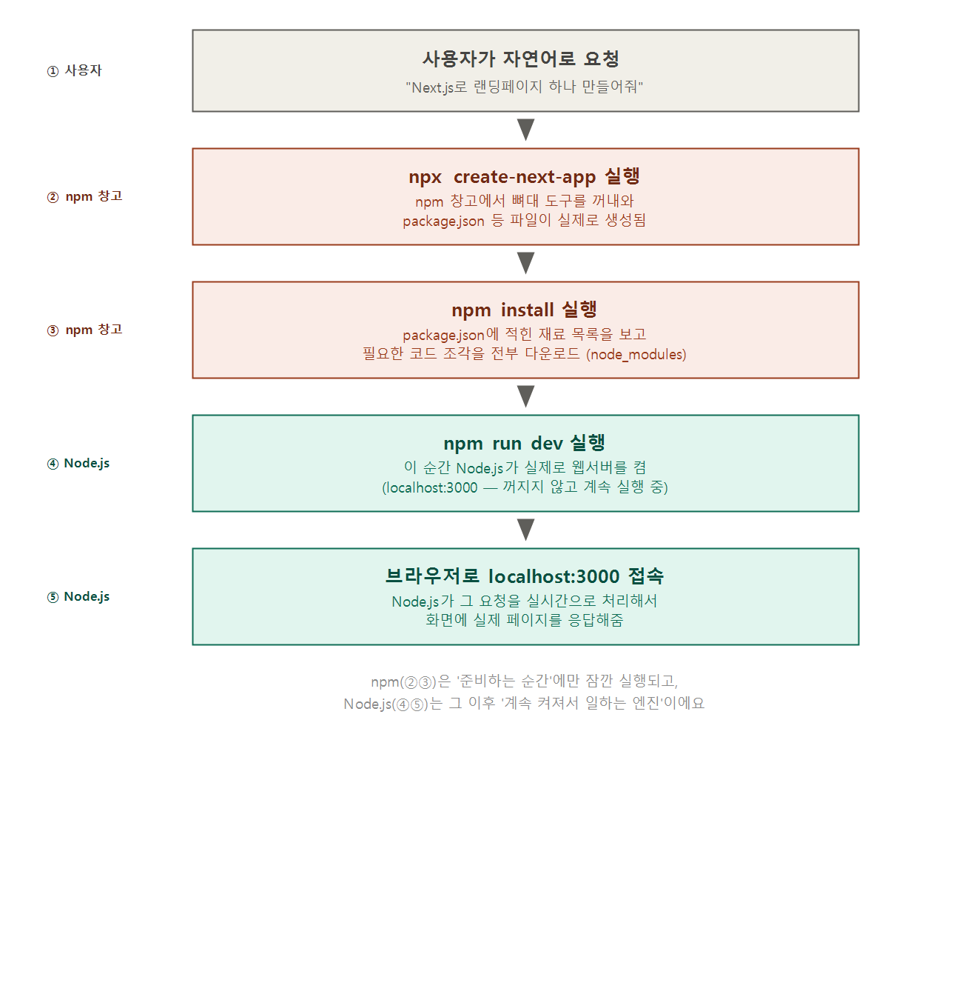

Node.js·npm 설치 확인과 개발 환경 점검하기 — 바이브 코딩으로 웹 만들기 (2)
2026. 7. 13.
※ 이 글은 모두의연구소 AI AIFFEL 과정에서 배운 내용을 제 나름의 언어로 재구성한 것입니다.
1편에서 Node.js·npm·uv·Git·터미널이 왜 필요한지는 이해했는데, 다시 생각해보니 이상한 점이 있었어요. 저는 그 도구들이 실제로 제 컴퓨터에 어떻게 들어왔는지 하나도 몰라요. Claude Code한테 "이거 설치해줘"라고 말만 했을 뿐이니까요. 수업 자료에 이 부분에 대한 추가 설명이 마침 나와 있었는데, AI가 만들어준 결과를 그냥 받아쓰기만 하는 것보다는 그 원리를 이해하는 게 더 중요하다는 생각이 들어서, 두 가지를 조금 더 짚어보고 싶었어요. 첫째, AI에게 맡겼을 때 뒤에서 정확히 무슨 일이 일어나는지. 둘째, 손으로 직접 설치했다면 어떤 과정을 거쳤을지.
Node.js와 npm은 대체 "언제" 실행되는 거야?
1편에서 저는 Node.js를 "화구", npm을 "재료 창고"라고 비유했어요. 그런데 비유만으로는 부족했어요. 구체적으로 어느 순간에 이것들이 실제로 켜지는지가 궁금했거든요. 그래서 "Next.js로 랜딩페이지 하나 만들어줘"라고 AI에게 부탁했을 때, 뒤에서 실제로 무슨 일이 일어나는지 순서대로 뽑아봤어요.

- 제가 요청: "Next.js로 랜딩페이지 하나 만들어줘"
- npm이 처음 등장: AI가
npx create-next-app을 실행해요. 이때 npm 창고에서 Next.js 뼈대 도구를 꺼내와서,package.json같은 실제 파일들을 만들어줘요. - npm이 두 번째로 등장:
npm install을 실행해요. 방금 만들어진package.json에 "이 프로젝트는 이런 재료들이 필요하다"고 적혀있는데, npm이 그 목록을 보고 필요한 코드 조각을 전부 다운로드해서node_modules라는 폴더에 채워 넣어요. - 여기서 Node.js가 처음으로 실제 가동돼요:
npm run dev를 실행하면, 이 순간 Node.js가 진짜로 웹서버를 켜요. 이건 한 번 실행하고 끝나는 게 아니라,localhost:3000이라는 주소에서 계속 켜진 채로 대기하고 있어요. - 제가 브라우저로 그 주소에 접속하면, 그 순간 Node.js가 제 요청을 실시간으로 처리해서 실제 페이지를 화면에 응답해줘요.
이제 확실히 답할 수 있어요. npm은 "재료를 준비하는 그 잠깐의 순간"에만 실행돼요 — 프로젝트를 처음 만들 때, 그리고 재료를 설치할 때요. Node.js는 그 이후로 "계속 켜져서 실제로 일하는 엔진"이에요 — 개발 서버가 켜져 있는 동안 내내, 누가 접속할 때마다 그 자리에서 응답을 만들어내요. 제 블로그가 지금까지 이 과정이 한 번도 없었던 이유는, 이미 완성된 HTML을 그냥 보여주기만 하는 정적 사이트라서 이 다섯 단계 자체가 필요 없었던 거예요.
만약 손으로 직접 설치했다면 (참고)
이번엔 AI에게 맡겼지만, 손으로 직접 설치하는 방법도 수업 자료에 자세히 나와 있었어요. 나중에 직접 해볼 일이 생기거나, AI가 설치한 방식이 이상하게 느껴질 때 비교해볼 기준이 될 것 같아서 참고로 정리해요.
Node.js와 npm은 "nvm"으로 관리한다
nvm(Node Version Manager)은 Node.js 자체를 하나만 딱 고정해서 설치하는 게 아니라, 여러 버전을 넣어두고 필요할 때마다 골라서 쓸 수 있게 해주는 관리자예요. 왜 이렇게 복잡하게 하냐면, 프로젝트마다 필요한 Node.js 버전이 다를 수 있어서예요 — 한 프로젝트의 Node.js가 다른 프로젝트를 덮어쓰면 안 되니까요.
더 실용적인 이유도 있어요. Node.js를 시스템 깊은 곳에 직접 설치하면, npm으로 뭔가를 전역 설치(npm install -g)할 때 "쓰기 권한이 없다"는 EACCES 에러가 나서 sudo(관리자 권한)를 붙여야 하는 경우가 많다고 해요. nvm은 제 계정 폴더(~/.nvm) 안에서 관리되기 때문에, 이 권한 문제를 대부분 피할 수 있어요.
주의할 점: 윈도우용 nvm(nvm-windows)은 원래 유닉스용 nvm과는 완전히 다른, 별도의 프로그램이라고 해요. 그리고 윈도우용은 --lts 같은 줄임 옵션이 없어서, LTS 버전 번호를 직접 찾아서 적어줘야 한다고 해요.
uv, Git, Claude Code
- uv: 공식 설치 문서의 명령어로 깔아요. (윈도우는 공식 문서의 PowerShell 명령을 그대로 씁니다.)
- Git: Git 공식 다운로드 페이지에서 운영체제에 맞는 걸 받아요.
- Claude Code: 공식 문서 기준으로, 윈도우 PowerShell에서는
irm https://claude.ai/install.ps1 | iex를 써요. Node.js 22 이상이 있다면npm install -g @anthropic-ai/claude-code로도 설치할 수 있어요 (제가 실제로 이 방법으로 설치했었어요). (참고로 macOS/Linux/WSL은curl -fsSL https://claude.ai/install.sh | bash를 써요.)
한 가지 헷갈릴 수 있는 부분: Claude Code는 파이썬 패키지가 아니라서 uv tool install로 설치하지 않아요. uv는 파이썬 프로젝트·도구 전용이고, Claude Code는 npm(자바스크립트 창고) 쪽에 있는 도구예요 — 1편에서 정리했던 "창고마다 취급 언어가 다르다"는 얘기가 여기서도 그대로 적용돼요.
공식 문서를 기준으로 삼는 이유도 짚어두고 싶어요. 버전은 계속 바뀌기 때문에, 지금 이 글에 적힌 명령어도 나중에는 최신이 아닐 수 있어요. 설치 명령을 복사하기 전에, 그 링크가 진짜 공식 문서인지, 버전 태그가 최신인지 한 번 확인하는 습관이 필요해요.
"설치했다"는 말, 그대로 믿어도 될까
AI든 사람이든, 어떤 방법으로 설치했든 마지막엔 반드시 터미널에서 직접 버전을 확인해야 해요.
pwd
node --version
npm --version
uv --version
git --version
claude --version숫자가 나오면 설치된 거고, command not found가 나오면 아직 안 된 거예요. 저는 오늘 이 확인 과정에서 계속 걸렸어요 — 분명히 설치했는데 새 터미널에서는 안 잡히는 일이 반복됐거든요(그 이야기는 1편에 자세히 적어뒀어요). 그런데 그 실패 화면 자체가 오늘의 진짜 학습 자료였어요. "안 돼요"라고만 말했다면 저도 AI도 계속 헤맸을 텐데, "node --version을 쳤더니 command not found가 나왔다"처럼 정확히 말하니까, 원인을 훨씬 더 빠르게 좁힐 수 있었어요.
AI에게 오류를 설명하는 올바른 방법
오류가 나면 이 틀에 맞춰서 AI에게 물어보는 게 좋아요. 핵심은 환경, 실행한 명령, 실제 출력을 분리해서 주는 거예요.
나는 Windows 환경에서 웹 개발 작업대를 설정하고 있어.
터미널에서 아래 명령을 실행했어.
명령:node --version
출력: [여기에 실제 오류 메시지 붙여넣기]
내 목표는 Node.js와 npm 버전을 확인하는 거야.
원인을 추정하지 말고, 내가 먼저 확인할 순서 3가지만 알려줘.
이 요청문이 "오류가 났어요"보다 나은 이유를 한 줄로 정리하면: AI가 추측할 부분을 최대한 없애줘서, 바로 다음 행동으로 넘어갈 수 있게 해주기 때문이에요. "안 돼요"는 AI도 저처럼 감으로 짚어야 하지만, 환경·명령·출력을 정확히 주면 AI가 그 자리에서 원인 후보를 좁힐 수 있어요. 오늘 저와 AI가 PATH 문제를 결국 찾아낸 것도, 매번 실제 에러 메시지와 명령어를 그대로 붙여넣었기 때문이었어요.
오늘 최종으로 확인한 것들
pwd→ 정상, 현재 위치 확인됨node --version→ v24.18.0npm --version→ 11.16.0uv --version→ 0.11.28git --version→ 2.55.0claude --version→ 2.1.207
이 숫자들이 바로 나오기까지 새 창을 여러 번 열고 닫고, 재시작하고, 원인을 찾아 헤맨 하루였어요. 그래도 결국 여섯 개 다 숫자가 나오는 걸 눈으로 확인했다는 게, 오늘 제일 뿌듯한 부분이에요.
"바이브 코딩으로 웹 만들기" 시리즈
(2) Node.js·npm 설치 확인과 개발 환경 점검하기 (이 글)